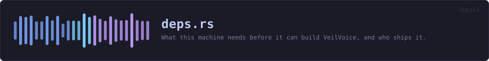

crates/veilvoice-verify/src/deps.rs
veilvoice-verify · 650 lines · read the source
What this machine needs before it can build VeilVoice, and who ships it.
The rule, which predates this module
Installing a build dependency means running somebody else's package manager, as root, on somebody else's machine. The companion setup already makes that trade and it gets the same rule here: detect what is there, say what each thing is and who ships it, and install only on an explicit yes. Never silently, never ticked by default, and never as a side effect of asking a question.
What it will not do is add a network client to VeilVoice. It shells out to the tool the platform already has, exactly as the verifier does for downloads, so the claim that this project's dependency graph contains no HTTP client is unchanged and still checkable with cargo tree.
Why there is a table at all
Almost all of VeilVoice is pure Rust and needs nothing but a compiler. The exceptions are real and they are the reason a build fails on a fresh machine with a message about a missing header rather than about a missing package:
- Linux —
cpalreaches ALSA throughalsa-sys, which is a-syscrate: it compiles against ALSA's C headers and askspkg-configwhere they are. Neither ships with a base install of most distributions. - macOS — CoreAudio comes from Apple's SDK, which arrives with the Xcode command line tools. Apple's licence does not permit redistributing it, which is also why this tool cannot build a macOS binary anywhere else.
- Windows — the MSVC toolchain needs a linker, which comes with the Visual Studio build tools.
Everything else -- the engine, the container format, the app lock, the website generators -- has no system dependency at all.
What "detected" means, and what it does not
Need::detect answers from what is on PATH and from pkg-config. That is a real answer for a linker or a compiler and a good answer for a library, but it is not a build. A machine can pass every probe here and still fail to compile, and this module says so rather than promising otherwise: the build in marker 55 is the only thing that actually knows.
In plain words
Before you can build this program yourself, your computer needs a few pieces: a Rust compiler, and -- on Linux and macOS -- one or two things from your operating system that VeilVoice's sound handling is built on top of. This works out which of those you already have and which you do not, tells you exactly what each one is and who makes it, and offers to install the missing ones only if you say yes.
It will never install anything on its own, and it does not download anything itself -- it asks the software installer your system already came with, so you can see exactly what is being run.
WHAT THIS FILE CONTAINS
650 lines defining 12 functions (7 public), 3 types and 1 constant. Everything below is read out of the source, so it cannot disagree with the code.
The types it owns.
enum Presenceline 62 — Whether a dependency is here, missing, or unanswerable.enum Routeline 98 — What could be done about a missing dependency, on this machine.struct Needline 135 — One thing a build needs.
What happens when it runs. These are the ways in: public, and nothing else in this file calls them, so they are what an outside caller reaches first.
Presence::is_satisfiedline 80 — Whether this counts as satisfied.Presence::describeline 85 — One line, for a report.Route::command_lineline 125 — The command line, for showing before asking.Need::detectline 198 — Look for it.
reachesdetect_alsa,detect_linker,program_version,whichNeed::routeline 220 — What could be done about it here.
reacheslinux_package,whichmissingline 421 — What is missing, split by whether a build stops without it.
reachesfor_this_platform
WHAT CALLS WHAT
The functions this file defines, and the calls between them. An edge means the callee's name appears, called, inside the caller's body — a syntactic reading, not a type-resolved one.
The same graph as Mermaid source
%%{init: {"theme":"base","themeVariables":{"background":"#1a1b26","primaryColor":"#1f2335","primaryTextColor":"#c0caf5","primaryBorderColor":"#7aa2f7","secondaryColor":"#16161e","tertiaryColor":"#16161e","lineColor":"#737aa2","textColor":"#c0caf5","mainBkg":"#1f2335","nodeBorder":"#7aa2f7","clusterBkg":"#16161e","clusterBorder":"#2f3549","fontFamily":"ui-monospace, SFMono-Regular, Consolas, monospace","fontSize":"14px"}}}%%
flowchart TD
n_is_satisfied(["Presence::is_satisfied<br/>line 80"])
n_describe(["Presence::describe<br/>line 85"])
n_command_line(["Route::command_line<br/>line 125"])
n_detect(["Need::detect<br/>line 198"])
n_route(["Need::route<br/>line 220"])
n_for_this_platform["for_this_platform<br/>line 282"]
n_linux_package["linux_package<br/>line 293"]
n_which["which<br/>line 327"]
n_program_version["program_version<br/>line 350"]
n_detect_linker["detect_linker<br/>line 361"]
n_detect_alsa["detect_alsa<br/>line 391"]
n_missing(["missing<br/>line 421"])
n_detect --> n_detect_alsa
n_detect --> n_detect_linker
n_detect --> n_program_version
n_detect_alsa --> n_which
n_detect_linker --> n_which
n_linux_package --> n_which
n_missing --> n_for_this_platform
n_route --> n_linux_package
click n_is_satisfied href "https://github.com/tilas01/veilvoice/blob/main/crates/veilvoice-verify/src/deps.rs#L80" "open the source"
click n_describe href "https://github.com/tilas01/veilvoice/blob/main/crates/veilvoice-verify/src/deps.rs#L85" "open the source"
click n_command_line href "https://github.com/tilas01/veilvoice/blob/main/crates/veilvoice-verify/src/deps.rs#L125" "open the source"
click n_detect href "https://github.com/tilas01/veilvoice/blob/main/crates/veilvoice-verify/src/deps.rs#L198" "open the source"
click n_route href "https://github.com/tilas01/veilvoice/blob/main/crates/veilvoice-verify/src/deps.rs#L220" "open the source"
click n_for_this_platform href "https://github.com/tilas01/veilvoice/blob/main/crates/veilvoice-verify/src/deps.rs#L282" "open the source"
click n_linux_package href "https://github.com/tilas01/veilvoice/blob/main/crates/veilvoice-verify/src/deps.rs#L293" "open the source"
click n_which href "https://github.com/tilas01/veilvoice/blob/main/crates/veilvoice-verify/src/deps.rs#L327" "open the source"
click n_program_version href "https://github.com/tilas01/veilvoice/blob/main/crates/veilvoice-verify/src/deps.rs#L350" "open the source"
click n_detect_linker href "https://github.com/tilas01/veilvoice/blob/main/crates/veilvoice-verify/src/deps.rs#L361" "open the source"
click n_detect_alsa href "https://github.com/tilas01/veilvoice/blob/main/crates/veilvoice-verify/src/deps.rs#L391" "open the source"
click n_missing href "https://github.com/tilas01/veilvoice/blob/main/crates/veilvoice-verify/src/deps.rs#L421" "open the source"
classDef entry fill:#1f2335,stroke:#7aa2f7,color:#c0caf5
class n_is_satisfied,n_describe,n_command_line,n_detect,n_route,n_missing entry
classDef api fill:#1f2335,stroke:#7dcfff,color:#c0caf5
class n_for_this_platform api
classDef helper fill:#1f2335,stroke:#bb9af7,color:#c0caf5
class n_linux_package,n_which,n_program_version,n_detect_linker,n_detect_alsa helperThis site loads no third-party script, so it cannot run Mermaid; the diagram above is the same nodes and edges drawn by the generator instead. GitHub renders the source below directly.
ITEMS
| Item | Line | Documentation |
|---|---|---|
Presence pub enum | 62 | Whether a dependency is here, missing, or unanswerable. |
Presence::is_satisfied pub fn | 80 | Whether this counts as satisfied. |
Presence::describe pub fn | 85 | One line, for a report. |
Route pub enum | 98 | What could be done about a missing dependency, on this machine. |
Route::command_line pub fn | 125 | The command line, for showing before asking. |
Need pub struct | 135 | One thing a build needs. |
ALL pub const | 153 | Everything a build can need, on every platform. |
Need::detect pub fn | 198 | Look for it. |
Need::route pub fn | 220 | What could be done about it here. |
for_this_platform pub fn | 282 | What this platform needs, in the order to report them. |
linux_package fn | 293 | A package under the three names the major families give it. |
which fn | 327 | Whether a program is on PATH, and where. |
program_version fn | 350 | The first line a program prints when asked its version. |
detect_linker fn | 361 | A linker, by whichever name this platform calls it. |
detect_alsa fn | 391 | ALSA's headers, through the tool the build script itself uses. |
missing pub fn | 421 | What is missing, split by whether a build stops without it. |